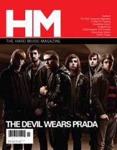
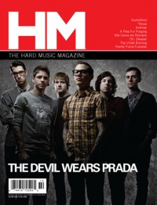
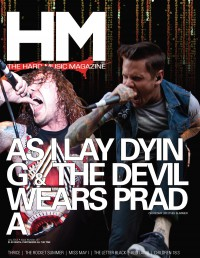

The Devil Wears Prada
|  March 2009 HM |
 October 2011 HM |
 July 2012 HM |
 September 2013 HM |
Media coverage:
- Jul 2007 in CCM "New Noise: The Devil Wears Prada", by Andrew Schwab
- 2007 in Christian Rock Report "National Band News: The Devil Wears Prada"
- Nov 2007 in HM "Well Whoop De-Do", by Dan Frazier
- Jan 2008 in CCM "What Now!: Fashion This", by Andrew Schwab
- Mar 2009 in HM "Ground Control To Major Label", by Doug Van Pelt
- Mar 2009 in HM "Poster: The Devil Wears Prada"
- May 2010 in HM "Hardnews: Quick & Concise: TWDP "Back To The Roots" Tour"
- Oct 2011 in HM "Killing The Beast", by Jeff Sistrunk
- Dec 2011 in HM "Poster: The Devil Wears Prada"
- Jul 2012 in HM "Honestly", by Charlie Steffens
- Sep 2013 in HM "The Interview", by David Stagg
- Jan 2014 in HM "The Jump: HM Live: The Devil Wears Prada", by David Stagg
Albums & reviews:
2007: Dear Love: A Beautiful Discord
- Sep 2006 in HM, by Kelly Benson
- Win 2006 in Uprise Zine
- 2007 in Christian Rock Report
2007: Plagues
- Sep 2007 in HM, by Doug Van Pelt
- 2007 in Christian Rock Report, by Matt Fisher
- Fall 2007 in Uprise Zine, by Kelsea Grala
- Jan 2009 in HM, by Doug Van Pelt
© 2011 CMnexus. Last updated May 2025. Contact: editor -AT- cmnexus -DØT- org